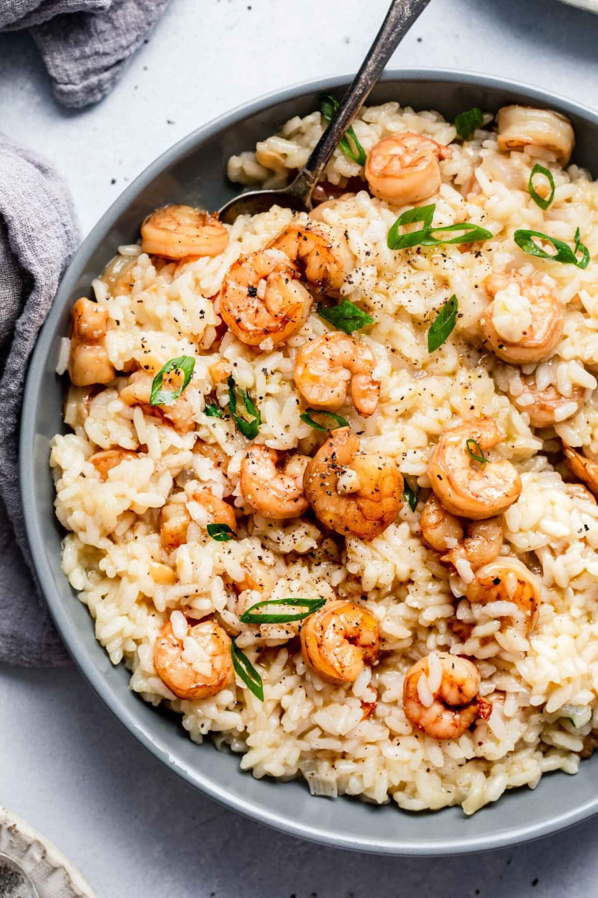

Elysian Shrimp Symphony

A Sea of Creamy Delight Where Shrimp and Arborio Dance in Perfect Harmony
Dive into a world of culinary delight with our Creamy Shrimp Risotto. This
elegant dish marries plump, succulent shrimp with creamy Arborio rice,
creating a symphony of flavors and textures that will leave your taste
buds dancing. Perfect for a special occasion or an indulgent weeknight
dinner, this shrimp risotto is a true culinary masterpiece.
Ingredients
- 1 cup Arborio rice
- 1 pound large shrimp, peeled and deveined
- 1/2 cup dry white wine
- 4 cups chicken or vegetable broth, kept warm
- 1 small onion, finely chopped
- 2 cloves garlic, minced
- 1 cup freshly grated Parmesan cheese
- 2 tablespoons olive oil
- 2 tablespoons unsalted butter
- 1/2 cup fresh parsley, chopped
- Salt and pepper to taste
- Lemon wedges for garnish
Steps
-
Sauté the Shrimp:
- In a large skillet, heat olive oil over medium-high heat
-
Add shrimp and cook for 2-3 minutes on each side until they turn
pink and opaque
- Remove shrimp from the skillet and set aside
-
Sauté the Aromatics:
- In the same skillet, melt butter over medium heat
-
Add chopped onion and garlic, sauté until softened and fragrant,
about 2-3 minutes
-
Toast the Rice:
- Add Arborio rice to the skillet with the onion and garlic
-
Stir continuously for 2-3 minutes until the rice becomes translucent
at the edges
-
Deglaze with Wine:
-
Pour in the white wine and stir until it's mostly absorbed by the
rice
-
Gradually Add Broth:
-
Begin adding warm chicken or vegetable broth one ladle at a time
-
Stir constantly and allow the liquid to be absorbed before adding
more
-
Continue this process until the rice is creamy and cooked al dente,
which should take about 18-20 minutes
-
Incorporate Shrimp and Cheese:
- Return the cooked shrimp to the skillet
- Stir in freshly grated Parmesan cheese
-
Cook for an additional 2-3 minutes until the shrimp are heated
through, and the risotto is creamy and smooth
-
Season and Garnish:
- Season the shrimp risotto with salt and pepper to taste
- Sprinkle with freshly chopped parsley
- Serve hot with lemon wedges for a burst of citrusy flavor
-
Enjoy:
-
Plate your creamy shrimp risotto, and savor each spoonful of this
delectable dish. It's a culinary masterpiece that's sure to impress
Go Back